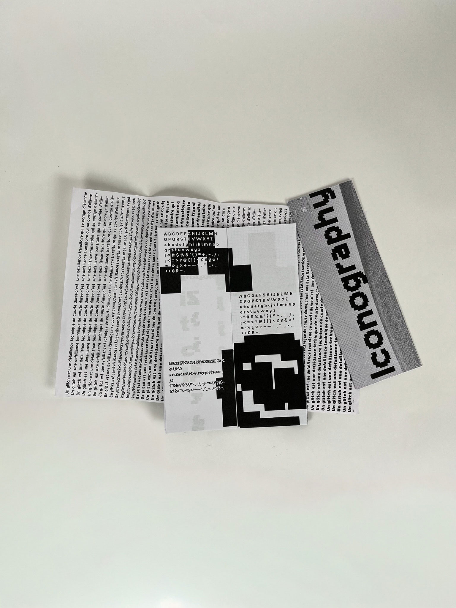
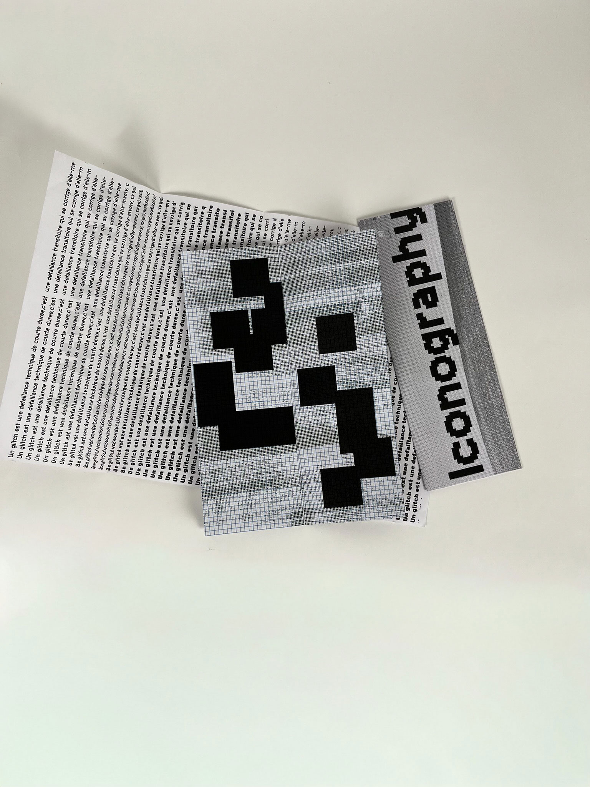
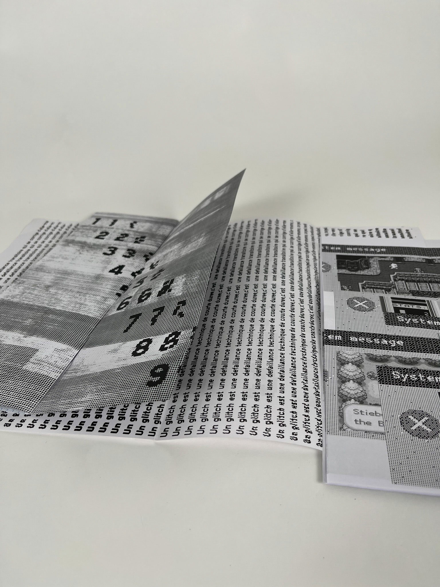
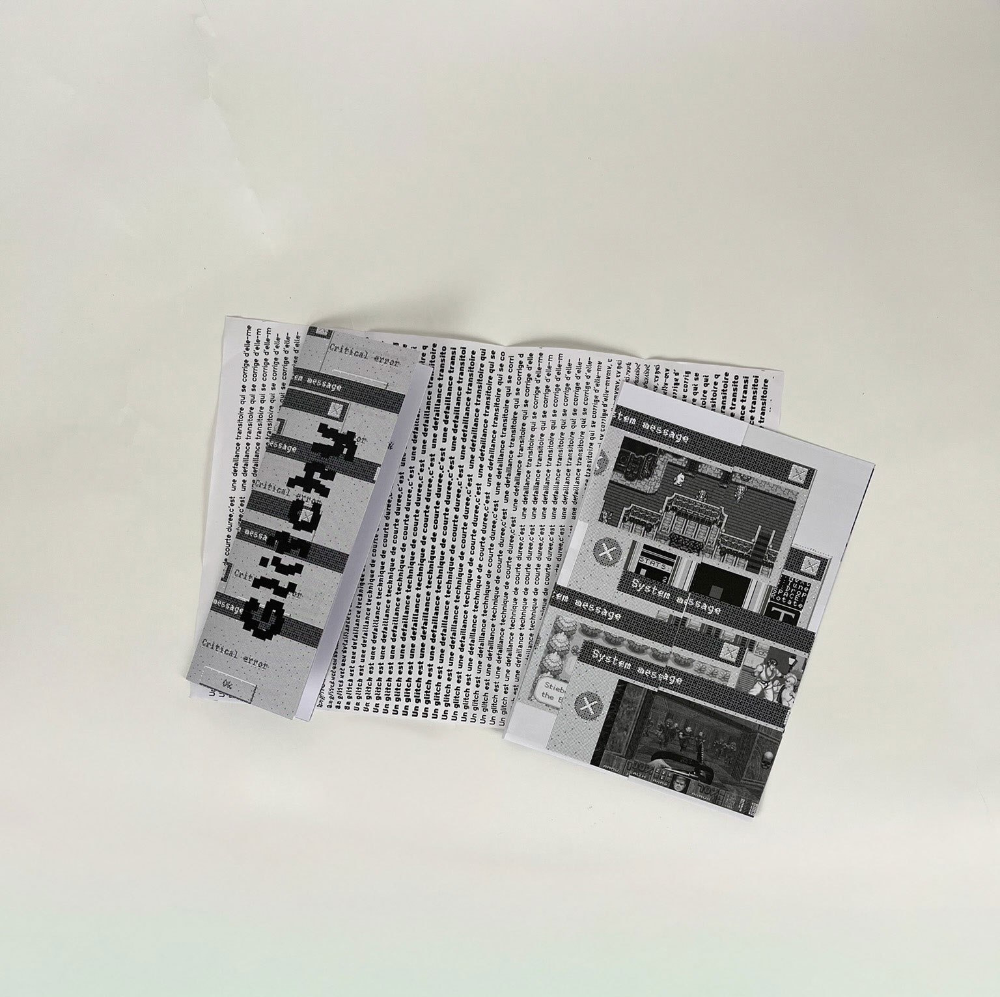
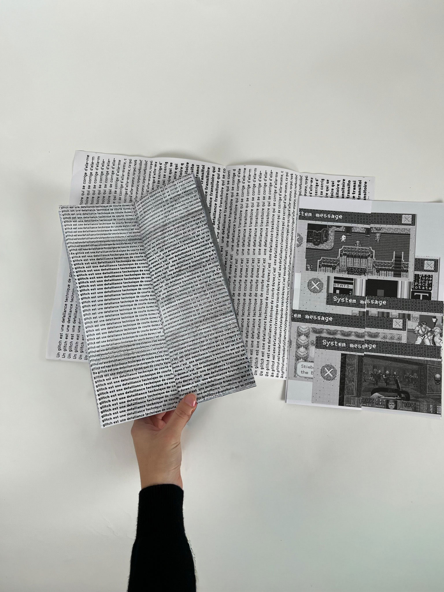
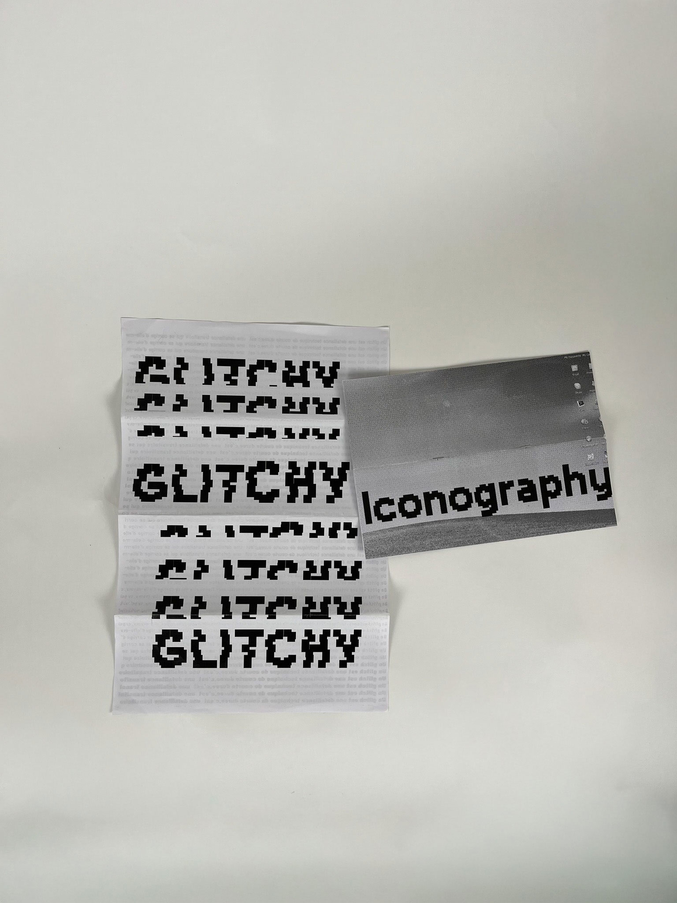

Specimen Typo
Ce spécimen explore la typographie Glitch à travers un travail centré sur l'esthétique du bug informatique. J'ai choisi de développer tout un vocabulaire visuel inspiré des dysfonctionnements numériques : l'édition suit ainsi une progression où un « virus » graphique, représenté par une traînée noire, se propage peu à peu jusqu'à rendre presque illisibles les dernières pages.
Ce projet est accompagné d'une édition iconographique composée d'images d'anciens jeux vidéo, dont les graphismes en pixels renforcent l'univers du glitch. Ces visuels sont intégrés au sein de cadres évoquant les fenêtres d'erreur de Windows XP, créant un dialogue entre langage typographique et esthétique informatique rétro.
Date du projet: Janvier 2025






